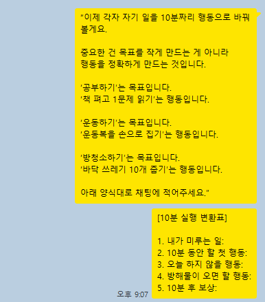
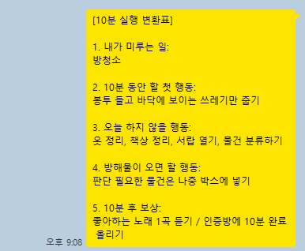
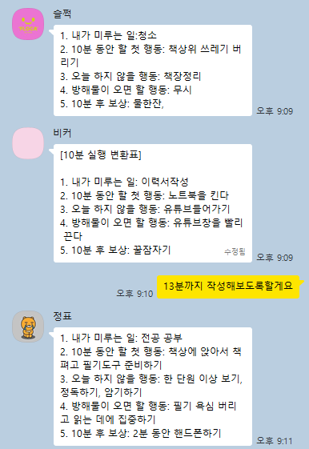
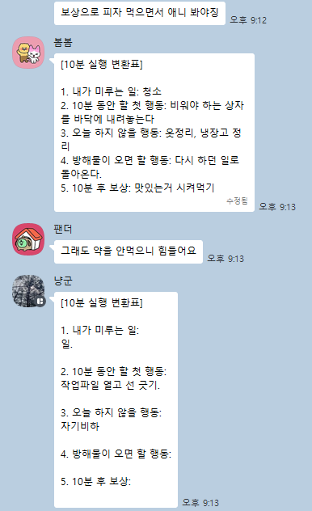
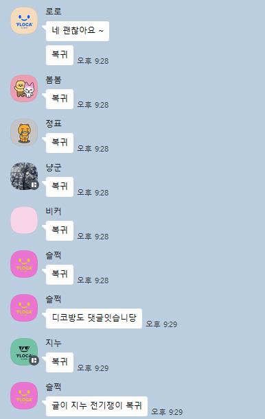
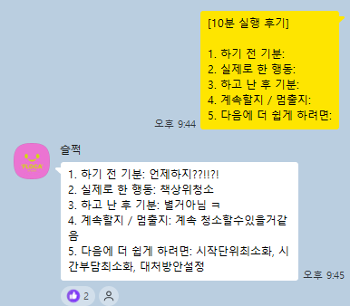
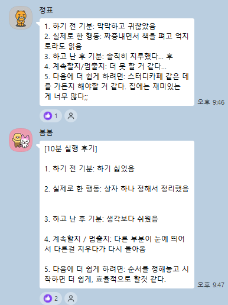
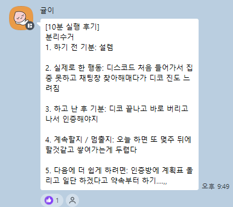
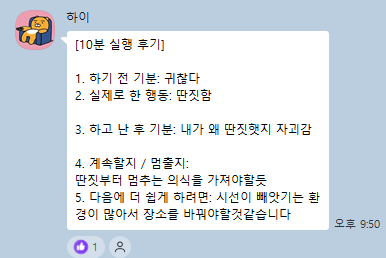

듣고 · 적고 · 함께 실행하고 · 인증하는 50분.
바디더블링으로, 혼자선 못 했던 걸 해냅니다.
팟캐스트 참여자 선착순 10명에게 인증방 무료 입장권 증정 — 입장료 5,000원 면제
할 일 목록은 완벽한데 막상 시작이 안 됩니다. 리스트가 쌓일수록 더 무거워집니다.
마감 직전에만 움직입니다. 평소엔 손이 안 가다가 급해지면 그제야 됩니다.
"오늘부터 달라지겠다"를 수백 번 다짐했지만, 며칠 뒤면 원래대로 돌아옵니다.
머릿속에선 다 됩니다. 생각할 땐 완벽한데, 실행하려는 순간 멈춥니다.
"나는 왜 이럴까" 자책이 반복됩니다. 의지력 문제가 아닌 걸 알면서도 자책합니다.
혼자 하면 무너집니다. 카페에서, 도서관에서, 누군가 옆에 있을 때만 겨우 됩니다. 이게 바로 바디더블링이 필요한 뇌입니다.
당신이 게을러서가 아닙니다
ADHD 뇌는 혼자서 실행 신호를 만들기 어렵습니다.시작할 동기 자체가 없을 때 도구가 무슨 소용입니까. ADHD 뇌는 외부 자극 없이 스스로 시작 신호를 만들기 어렵습니다.
ADHD를 이해하는 것과 실제 행동하는 건 완전히 다른 일입니다. 아는 것만으로는 바뀌지 않습니다.
보고 끝납니다. 내가 직접 해야 할 게 없으면 행동 변화로 이어지지 않습니다.
"이번엔 진짜"를 반복할수록 자존감만 깎입니다. 의지력이 아니라 구조가 필요합니다.
필요한 건 정보가 아니라 함께 있어주는 구조입니다.
ADHD 뇌는 옆에 누군가 있을 때 실행이 됩니다 — 이걸 바디더블링이라 합니다.
FLOCA 팟캐스트는 그 구조를 온라인으로 만듭니다.
매 세션마다 같은 흐름이 반복됩니다. 반복될수록 뇌가 실행에 익숙해집니다.
10분 안에 핵심만 설명합니다. 이론이 아닌, 오늘 당장 써먹을 수 있는 것들입니다.
들은 내용을 내 상황에 맞게 직접 적습니다. 쓰는 순간 내 것이 됩니다.
팟캐스트가 켜진 채로 바로 합니다. 끄고 나중에 하는 게 아닙니다.
완벽하지 않아도 됩니다. 했다는 흔적을 남기는 것만으로 충분합니다.
안 된 날이 있어도 괜찮습니다. 다음 회차가 기다립니다. 복귀 자체가 훈련입니다.
지금 내 상태 점검. 오늘 뭘 할지 한 줄 선언.
오늘 주제 10분 강의. 핵심만, 이론 없이.
워크시트에 내 상황 맞게 쓰기. 5분 집중.
혼자가 아닌 느낌으로 함께 집중. BGM 흘러나오고, 채팅창으로 연결.
한 것 인증, 다음 회차 예고. 짧게 마무리.
16회차 4시즌 구성. 매 회차는 실행 주제 하나에 집중합니다.
ADHD는 의지 부족이 아니라 실행기능 문제다.
오늘 미룬 일 하나를 적고, "가장 작은 첫 행동"으로 바꾸기.
"내가 미룬 일 → 10분 안에 가능한 첫 행동" 댓글 인증
시간감각 왜곡과 마감 직전 폭발형 실행.
오늘 하루를 아침 / 점심 / 저녁 3칸으로만 쪼개기.
자동사고와 회피 합리화.
NO맨 문장 하나를 적고, 변호사 문장으로 바꾸기.
10분 원칙.
각자 미루는 일을 10분짜리 행동으로 바꾸기.
완벽한 결과물이 아닙니다. 했다는 흔적이면 충분합니다.
✅ 인증 예시:
"오늘 할 거: 보고서 초안 첫 문단만 쓰기.
10:23에 시작했고 10:31에 첫 문단 완성함."
규칙은 딱 하나 — 사진이든 텍스트든 형식은 자유.
인증방에 올리면 그것으로 완료입니다.
📝 10분 실행 변화표 인증
팟캐스트를 들으면서 각자의 미룬 일을 10분짜리 행동으로 바꿔 적습니다.




🔄 복귀 인증
무너진 날이 있어도 다시 돌아옵니다.

💬 10분 실행 후기
10분 실행 후 느낀 점을 공유합니다.




※ 의학적 치료나 증상 개선이 아닙니다. 실행 패턴과 일상 루틴에 관한 경험적 변화입니다.
"시작이 조금 덜 무섭다"는 말을 하게 됩니다.
무너진 날에도 다음 회차에 다시 나타납니다.
나만 이렇지 않다는 걸 몸으로 느낍니다.
작은 것도 했다고 셀 수 있게 됩니다.
자책 대신 복귀로 패턴이 바뀌기 시작합니다.
팟캐스트는 시작입니다. 연결된 공간들이 실행을 지속시킵니다.
2주에 한 번 실시간. 듣고 적고 실행하는 50분.
같은 패턴을 가진 사람들과 이야기하는 공간.
매 회차 미션 인증. 완벽하지 않아도 올릴 수 있습니다.
가상 공간에서 함께 집중.
더 깊은 변화가 필요할 때.
딱 50분만 함께하면 됩니다.
오늘 딱 하나만. 지금 바로 여기서.
진단 불필요 · 언제든 참여 · 인증 부담 없음
🎁 선착순 10명 인증방 무료 입장권 증정